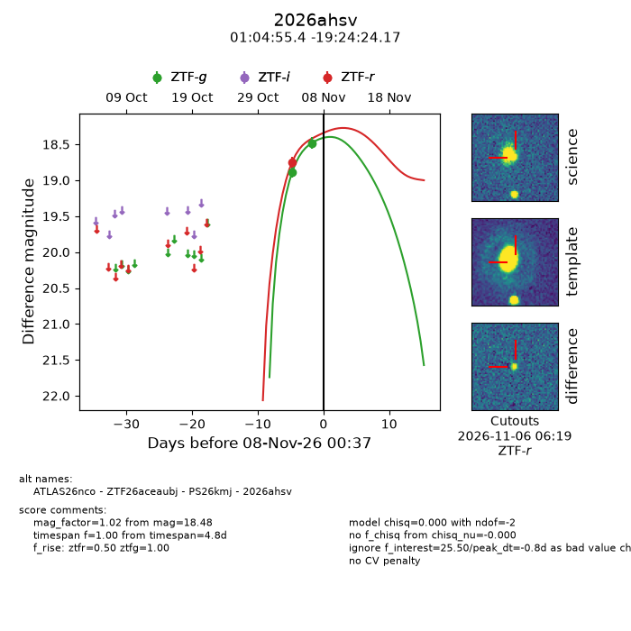
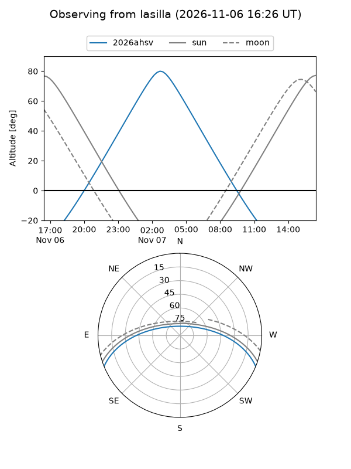
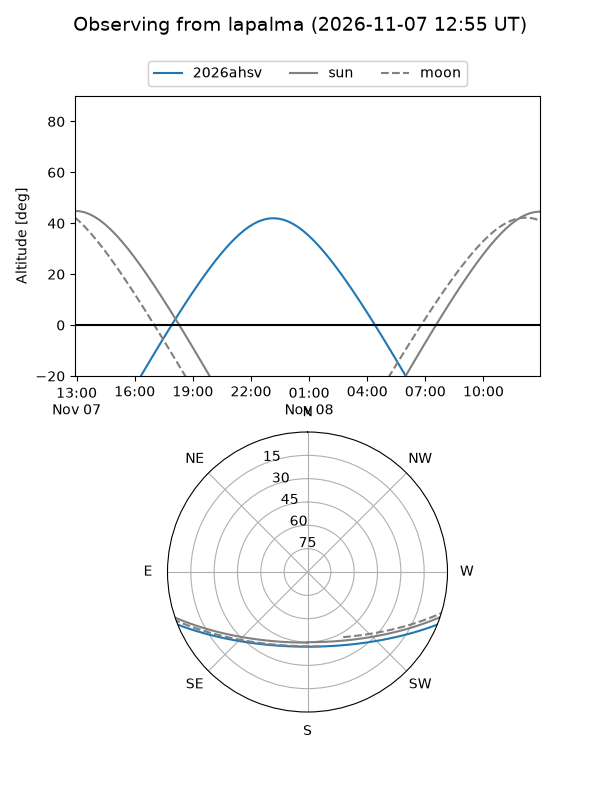
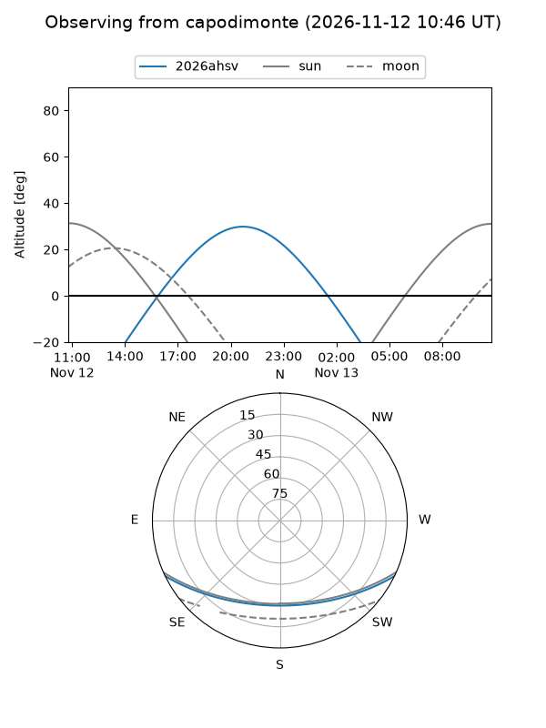
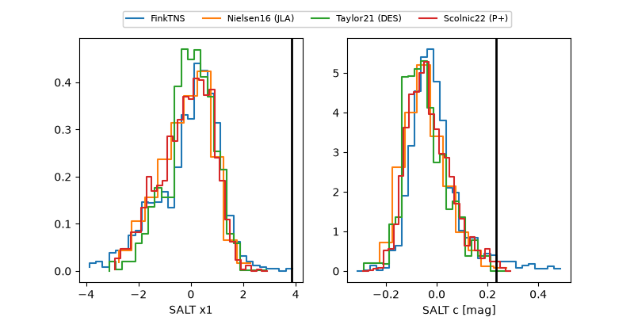

2026ahsv
Target 2026ahsv at 2026-11-08 00:39
Aliases and brokers:
FINK-ZTF: ztf.fink-portal.org/ZTF26aceaubj
Lasair-ZTF: lasair-ztf.lsst.ac.uk/objects/ZTF26aceaubj
ALeRCE-ZTF: alerce.online/object/ZTF26aceaubj
YSE-PZ: ziggy.ucolick.org/yse/transient_detail/2026ahsv
TNS name: wis-tns.org/object/2026ahsv
Direct TNS query: direct search
alt names
ZTF26aceaubj (ztf,fink_ztf)
2026ahsv (tns,yse)
ATLAS26nco (atlas)
PS26kmj (panstarrs)
Coordinates:
equatorial (ra, dec) = 16.2310,-19.40671
equatorial (HMS+DMS) = 01:04:55.44,-19:24:24.17
galactic (l, b) = (145.4774,-81.68179)
Flags:
peak dt: -0.8
Photometry:
last ztfg=18.48, ztfr=18.75
2 ztfg, 1 ztfr detections
Lightcurve

Visibility



Additional plots
